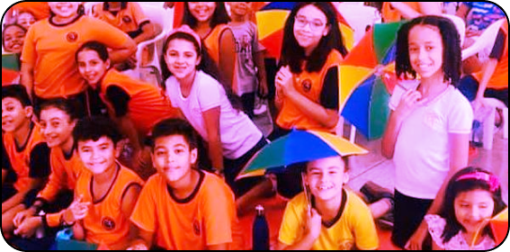

Sobre o Bairro
Brasilândia é um distrito do município de São Paulo. O distrito é dividido em 41 bairros e alguns conjuntos habitacionais.
Além disso, a Serra da Cantareira ocupa grande parte do extremo norte do distrito. Seus limites são Cachoeirinha, Freguesia do Ó, Pirituba, Jaraguá e o município de Caieiras.


A população estimada em 2010 é de 280.069 habitantes, sendo o 4º distrito mais populoso do município e o primeiro da zona norte. O distrito conta com alguns pontos de comércio 24h e farmácias que se revezam em plantão. A Brasilândia é bastante popular pelo grande comércio, número de igrejas, além da região contar com diversos postos de saúde.
Até a década de 30, a região vista na foto abrigava principalmente sítios destinados à plantação de cana-de-açúcar. Foi quando o comerciante Brasílio Simões liderou a comunidade na construção da Igreja de Santo Antônio.

O distrito possui cerca de 41 escolas, dividas entre instituições públicas e particulares. Grandes destaques dentre as escolas são o Colégio Alves e Freitas e o Colégio Gondim.
Para que conheça mais sobre a formação do bairro, você pode visitar nossa página sobre a história, ou assistir o vídeo abaixo: